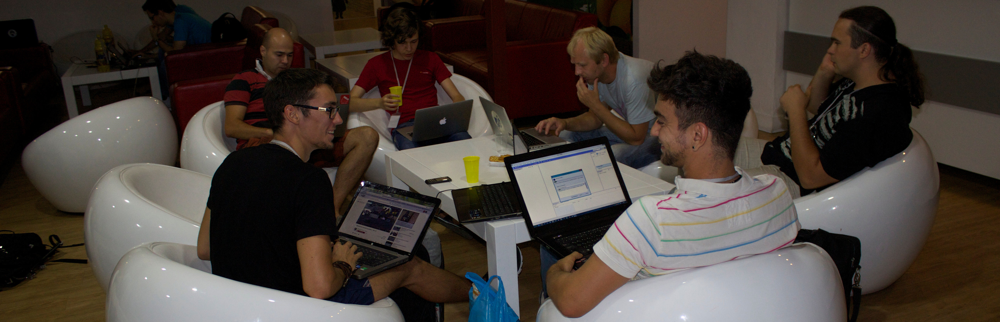

Organizational report about 24Hack hackathon
С 17 по 18 августа 2013 год в г. Запорожье проходил первый "хакатон" 24Hack, организованный компанией Ecommerce. В "хакатоне" принимали участие 17 команд в общей сложности состоявшие из 51 человека.

Все действие разворачивалось в коворкинг-центре "Zima Project", где участники имели возможность пользоваться 10 различными зонами площадью 800 квадратных метров.
В 12 часов началась регистрация, и сразу же начали подходить первые команды, которых мы встречали на входе для регистрции и выдачи бейджей. Начало хакатона планировалось в 13.00, но по некоторым причинам пришлось перенести его на 13.40.

Всем участникам была дана возможность представить свои проекты и найти команду на месте, если кто-то пришел сам. Кстати, таких людей оказалось немало.

Например, ребята объединились в болшую команду из 9 человек, которая в процессе обсуждения идей разбилась на 3 команды.

Также, специально на 24Hack приехали коллеги из нашего румынского офиса - Михаэла и Богдан. Ребята разрабатывали свои собственные проекты, и даже смогли познакомиться с некоторыми участниками, несмотря на языковые преграды.
Отдельно хотелось отметить одну команду из города Ровно. Чуваки не смогли приехать лично, и решили участвовать онлайн. Для них мы постарались организовать круглосуточную онлайн трансляцию через Google Hangouts. С трансляцией возникали некоторые проблемы. То у них пропадала связь, то у нас. Но это будет хорошим уроком на будущее.

Как только все приступили к работе над проектами, произошел первый факап. Почти у каждого из участников было по 2-3 девайса, которые конечно же нужно было подключить к сети. Wi-Fi упал мгновенно. Мы постарались решить эту проблему максимально быстро путем установки дополнительных роутеров и свичей.

К 15.00 прибыла еда, и хакеры имели возможность подкрепиться прежде чем полностью нырнуть в свои проекты. Мы попытались покрыть все основные потребности хакеров, предоставив им кофе, чай, колу и печеньки. Недостатка в питании на мероприятии не было, что позже вылилось в огромное количество оставшейся еды.

После принятия пищи, все команды полноценно приступили к разработке своих проектов. Некоторые перестали вообще реагировать на происходящее вокруг, следующие 24 часа их интересовал только их код и проект.

Так продолжалось до ужина. Еда немного отвлекла всех от их проектов и все смогли показать и расказать друг другу о своих проектах.

После этого мы попытались организовать небольшой отдых желающим и сделали кальян, который с радостью покурили на улице. Там, мы более подробно обсудили все проекты и имели возможность подружиться ближе с участниками.
После наступления глубокой ночи кое кто решили прилечь поспать, однако были реально стойкие, которые не сомкнули глаз ни на секунду. Это и есть истинный дух "хакатона"! 24 часа непрерывного кодинга ради реализации своей идеи!
Люди решившие не спать подкрепляли свои силы энергетиками и кофем, в общем все как обычно.

К утру, когда все уже начали осознавать приближение демо, на удивление практически не было суматохи. Многие проекты уже были частично работающими.
Настало время регистрации проектов, и на нашем сайте появилась форма для регистрации проектов. На демо были представлены 14 проектов, включая наш (вне конкурса) и чуваков из Ровно (онлайн участников).

Проекты оказались на удивление серьезные. И что самое главное - рабочие!
1) Terminal FX от Алексея Сивоконя. Это линуксовый терминал с визуальными эффектами, которые можно писать на скриптовом языке (Lua). Суть проекта - анимированный курсор, добавляющий радости при ежедневном использовании консоли. Ссылка на проект: https://github.com/asivokon/vte-fx

2) TechTeam от команды Just4Dev. Приложение собирает статистику с GitHub о популярности кода и отображает все в красивом виде уже на сайте сервиса. Далее эта статистика используется и развивается независимо от гитхаба, используя свою собственную систему. Таким образом гитхаб служит начальной точкой для сбора БД. Ссылка на репозиторий https://github.com/creativ/TechTeam

3) WebPlayer от команды ICT. Все очень просто - это веб плеер, написаный на JS. Плеер имеет все необходимые функции для ежденевого испольования, при этом он является полностью кроссплатформенным.

4) Xbox+Ar.drone от нашей команды, состоявшей из меня (Мосина Андрея) и Валентина Остаха. Приложение дает возможсть использовать джойстик от Xbox360 для управления квадракоптером Ar.Drone. Также приложение шлет видео-стрим в браузер и является полноценной заменой стандартной проги для смартфонов. Ссылка на репозиторий - https://github.com/mosinandrey/node_xbox

5) SixHandsTheory от команды ITRF. Одна из моих любимых идей на хакатоне. Проверка теории о шести рукопожатиях с использованием соц. сети вконтакте. На демо чуваки показали, как два абсолютно незнакомых человека оказались связаны между собой через четырехх других людей.

6) Toreadr от команды Team'); DROP DATABASE;. Отличная попытка дропнуть нашу базу проектов))). Суть проекта - создать приложения, которое заменит нам всем недостающий Google Reader. Приложение работает отлично, при этом не имея ничего лишнего. Все очень просто и понятно. Рекомендую к использованию)

7) FingerBomb от Максима Галушки. Это игра, в которой можно управлять без каких-либо контроллеров. Достаточно использовать лишь 2 цветных маркера на пальцах. Выглядит очень шикарно, можно посмотреть на демо снятом Максимом. Демо -

8) Lord Of Messages от команды World Domination из г. Ровно. Приложение может отсылать сообщения выбранным людям в vk, которое будет приходить в указаное время. Таким образом Вы никогда не забудите поздравить кого-то с ДР, отправив ему сообщения на 10 лет вперед! А вот как выглядел "хакатон" с их стороны:
9) Ухаб от Леонида Шевцова. Одно из самых социально значимых приложений, созданых на 24Hack! С помощью акселерометра на смартфоне приложение измеряет ямы на дорогах и после этого переносит собранные данные на карту. Лёня даже успел проехаться по всем ямам в округе и показать проект в деле. Подробнее о проекте можно почитать в его блоге

10) MobileBlog от Rada Bogdan Raul. Это проект от нашего румынского коллеги. Приложение умеет делиться написанными блог постами с другими людьми по блютузу. На презентации Богдан показал как это работает на примере 2 телефонов.
11) Twitter bot от команды atombird. Ребята написали супер-умного бота, для настройки которого не нужно абсолютно ничего кодить! Его можно сконфигурировать через графический интерфейс, где все просто и понятно. На выходе Вы получаете уникального бота, способного работать по заданому алгоритму.

12) Piligrim от команды RobotsIn'heCloak. Отличное приложени, способное посылать тебе push notifications когда ты находишься возле интересного, или нужного тебе места. Можно задать тематику, например "аптеки" и он напомнит тебе, когда ты будешь находиться возле аптеки.

13) FTW от самой большой команды на 24Hack - MURKA. Ребята подошли к "хакатону" очень серьено. Во-первых, их было 9(!) человек. Во-вторых, у них был проджект менеджер, художник и скрам-мастер. В итоге вышла шикарная многопользовательская игрушка на JS. В игре есть 5 уровней, и выглядит она весьма приятно.
П.С. Обязательно зацените отчет о поездке на 24Hack от Мурки!

14) Join purchases от команды Crazy penguins Отчет о 24Hack от Kastor'a и еще некоторые подробности о сервисе тут - http://www.vr-online.ru/blog/24hack-khakaton-v-zaporozhe-8785

15) Антон Шастун работал над проектом, способным рассчитать следующий ход в шахматной партии. На основании текущей позиции фигур алгоритм предлагает Вам доступные ходы. Очень сильный проект, над которым Антон работает уже 2 хакатон.

16) HuBot от Дмитрия Нестерюка. Еще один проект от нашей команды Ecommerce. К сожалению, проект не был готов к демо и соответственно не был представлен. Это очень интересный бот, который умеет принимать команды через практически любой мессенджер и качать торренты на твоем домашнем сервере.

17) PartyPlayer от Михаэлы - еще один проект от наших румынских друзей, который к сожалению не был готов к демо.
Во время демо, которое кстати начало примерно в 13.00, у нас возникали многочисленные проблемы с подклбчением лэптопов к проектору. Так как проектор висел где-то высоко под потолком, то к нему тянулся какой-то длиннючий HDMI каблель, аналогов которого у нас не было. А так как HDMI был не у всех, это вызывало некоторые проблемы. Например некоторые презентации мы делали тупо через расшаренный рабочий стол в Google Hangouts.
Еще одной проблемой оказалась нехватка времени на демо. Тут есть две стороны медали. С одной - команды долго работали надо своими проектами, и каждому хотелось расказать подробнее. С другой - все уже были весьма уставшие, именно поэтому на хакатонах принято выделять 2-3 минуты на демо. Однако тут у нас вышло все в довольно свободной форме. Но худо-бедно мы справились с этим, и подошли к голосованию.
Итак, итоги хакатона следующие:
1 Место - WebPlayer от команды ICT
2 Место - Ухаб от Леонида Шевцова
3 Место - FingerBomb от Максима Галушки
Все победители получили по Raspberry Pi и футболке с логотипом 24Hack. Но это еще не все! За дикий энтузиазм и желание участвовать в нашем хакатоне мы выслали еще один Raspberry Pi в г. Ровно, для World Domination. Надеюсь этот поощрительный приз от нас заставит их приехать на следующий хакатон лично ;)

Вот так и прошел наш первый хакатон. Мы были очень рады видеть такое большое количество небезразличных, полных энтузиазма и готовых работать над своими идеями людей. Спасибо, что были с нами эти 24 часа! Надеемся увидеть всех в следующем году!